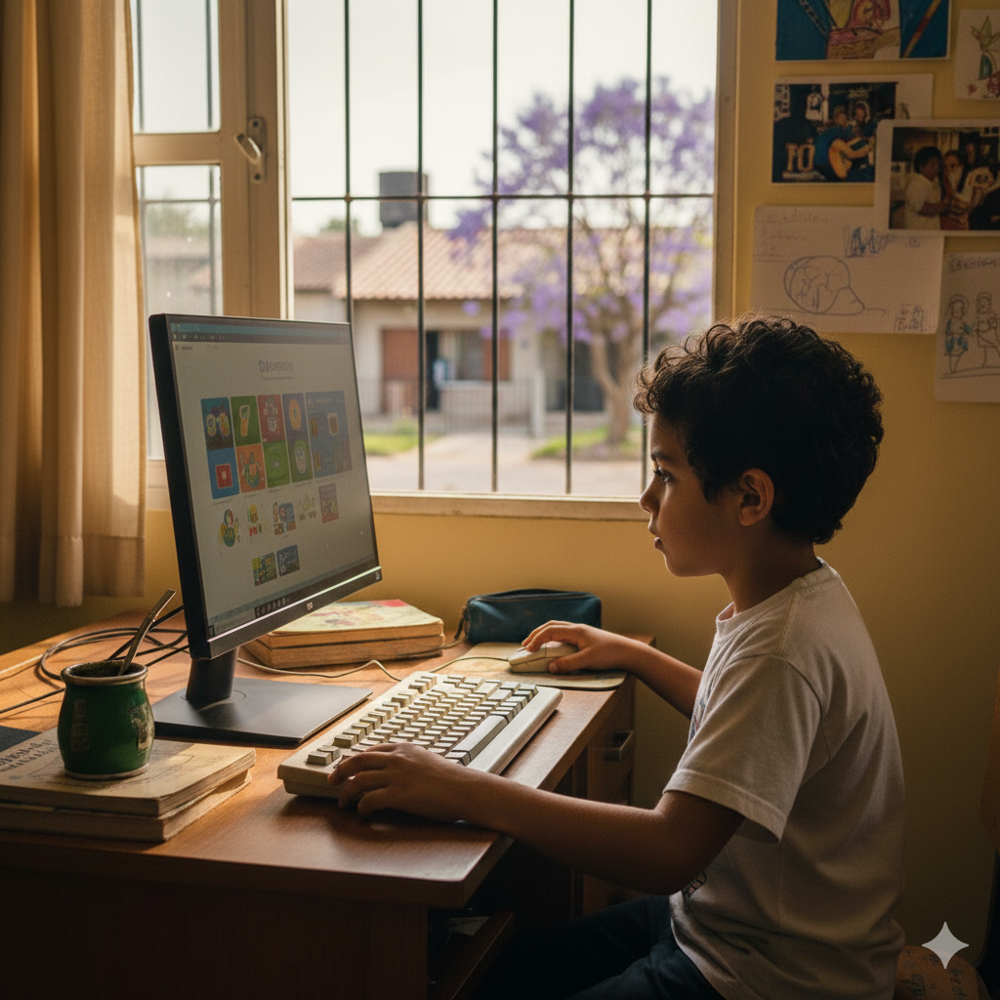
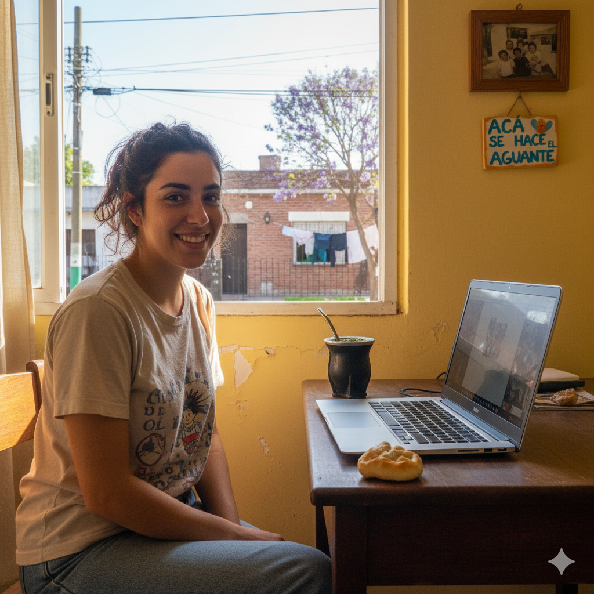
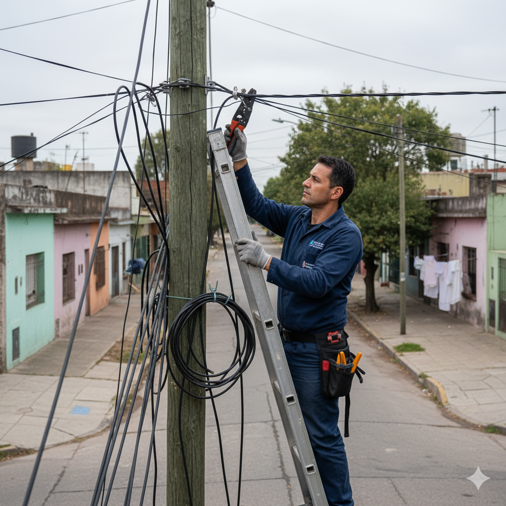

HISTORIA
"En José C. Paz, el acceso a internet no siempre es fácil. Los servicios que ofrecen las grandes compañías a menudo no cumplen con lo prometido y, en muchos casos, su calidad no está a la altura de las expectativas. Además, los costos para adquirirlos son frecuentemente elevados, dejando fuera a una parte de nuestra comunidad. Nuestra cooperativa nace con el propósito de ofrecer a nuestros vecinos un servicio de internet accesible, veloz y con un precio acorde a su economía. Buscamos ser una alternativa de igual calidad que los servicios brindados por los grandes proveedores de internet del país, llevando nuestra conexión a los hogares de clase media y bajos recursos."

Nuestro servicio beneficia a los niños de José C. Paz, ya que al ser adquirido por sus familias, les permite acceder a una mejor calidad en educación y recreación. Todo esto, sin la preocupación de un servicio caro o deficiente.

Los estudiantes de José C. Paz (primario, secundario y universitario), se les brindan acceso a todas las herramientas informáticas, mejorando considerablemente la calidad de su educación.

El mapa de cobertura refleja nuestro compromiso: alcanzar hasta el último vecino para democratizar el acceso al internet.

Nuestro equipo técnico trabaja arduamente para llevar la mejor conexión a cada rincón del distrito, asegurando un servicio de calidad y estable para todos nuestros vecinos.